[TOC]
虎彩信息中心创新研发部新人指引-前端部分
web前端开发规范
CSS书写规范
- 待完善
待完善
javaScript书写规范
命名规范
- 常量名
全部大写并单词间用下划线分隔
如：CSS_BTN_CLOSE、TXT_LOADING - 对象属性或者方法名
小驼峰式
如：init、bindEvent、updatePosition
示例：Dialog.prototype = { init: function () {}, bindEvent: function () {}, updatePosition: function () {} … }; - 类名（构造器）
小驼峰式但首字母大写
如：Current、DefaultConfig - 函数名
小驼峰式
如：current()、defaultConfig() - 变量名
小驼峰式
如：current、defaultConfig
代码格式
- "()"前后需要跟空格
- "="前后需要跟空格
- ","后面需要跟空格
- JSON对象需格式化对象参数
- if、while、for、do语句的执行体用"{}"括起来
"{}"格式如下。
if (a==1) { //代码 }; - 避免额外的逗号。
var arr = [1,2,3,];
- for-in循环体中必须用hasOwnProperty方法检查成员是否为自身成员，避免来自原型链上的污染。
- 使用严格的条件判断符。用===代替==，用!==代替!=，避免掉入==造成的陷阱。
在条件判断时，这样的一些值表示false。
null, undefined与null相等, 字符串'', 数字0, NaN 在==时，则会有一些让人难以理解的陷阱。
(function () { var undefined; undefined == null; // true 1 == true; //true 2 == true; // false 0 == false; // true 0 == ''; // true NaN == NaN;// false [] == false; // true [] == ![]; // true })();对于不同类型的 == 判断，有这样一些规则，顺序自上而下：
undefined与null相等
一个是number一个是string时，会尝试将string转换为number
尝试将boolean转换为number
尝试将Object转换成number或string- 而这些取决于另外一个对比量，即值的类型，所以对于0、空字符串的判断，建议使用===
- 以下的类型对象不使用new 构造
new Number new String new Boolean new Object //用{}代替 new Array //用[]代替 - 引用对象成员用obj.prop代替obj["prop"]，除非属性名是变量。
- 从number到string的转换。
/** 推荐写法*/ var a = 1; typeof(a); //"number" console.log(a); //1 var aa=a+''; typeof(aa); //"string" console.log(aa); //'1' /** 不推荐写法*/ new String(a)或a.toString() - 从string到number的转换，使用parseInt，必须显式指定第二个参数的进制。
/** 推荐写法*/ var a = '1'; var aa = parseInt(a,10); typeof(a); //"string" console.log(a); //'1' typeof(aa); //"number" console.log(aa); //1 - 从float到integer的转换。
/** 推荐写法*/ Math.floor/Math.round/Math.ceil /** 不推荐写法*/ parseInt - 字符串拼接应使用数组保存字符串片段，使用时调用join方法。避免使用+或+=的方式拼接较长的字符串，每个字符串都会使用一个小的内存片段，过多的内存片段会影响性能。
/**推荐的拼接方式array的push、join*/ var str=[], list=['测试A','测试B']; for (var i=0 , len=list.length; i < len; i++) { str.push( '<div>'+ list[i] + '</div>'); }; console.log(str.join('')); //<div>测试A</div><div>测试B</div> /** 不推荐的拼接方式+=*/ var str = '', list=['测试A','测试B']; for (var i = 0, len = list.length; i< len; i++) { str+='<div>' + list[i] + '</div>'; }; console.log(str); //<div>测试A</div><div>测试B</div> - 尽量避免使用存在兼容性及消耗资源的方法或属性。
不要使用with，void，evil，eval_r，innerText
VueJS前端开发环境
Node.js安装及环境配置
- 安装环境
- 本机系统：Windows 7（64位）
- Node.js：v8.11.3LTS（64位）
- 本机系统：Windows 7（64位）
- 3.3.2.1.2安装Node.js步骤
- 下载对应你系统的Node.js版本:https://nodejs.org/en/download/
- 选安装目录进行安装
- 测试
- 下载对应你系统的Node.js版本:https://nodejs.org/en/download/
- 前期准备
- Node.js简介
简单的说 Node.js 就是运行在服务端的 JavaScript。Node.js 是一个基于 Chrome V8 引擎的 JavaScript 运行环境。Node.js 使用了一个事件驱动、非阻塞式 I/O 的模型，使其轻量又高效。Node.js 的包管理器 npm，是全球最大的开源库生态系统。 - 下载Node.js
打开官网下载链接:https://nodejs.org/en/download/ 我这里下载的是node-v8.11.3-x64.msi,如下图： 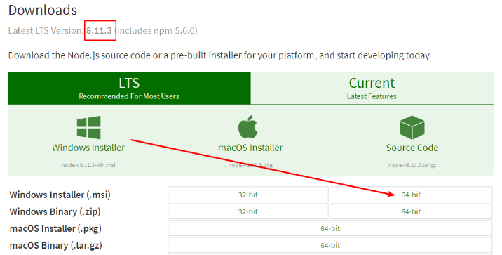
- Node.js简介
- 开始安装
下载完成后，双击“node-v8.11.3-x64.msi”，开始安装Node.js点击【Next】按钮。
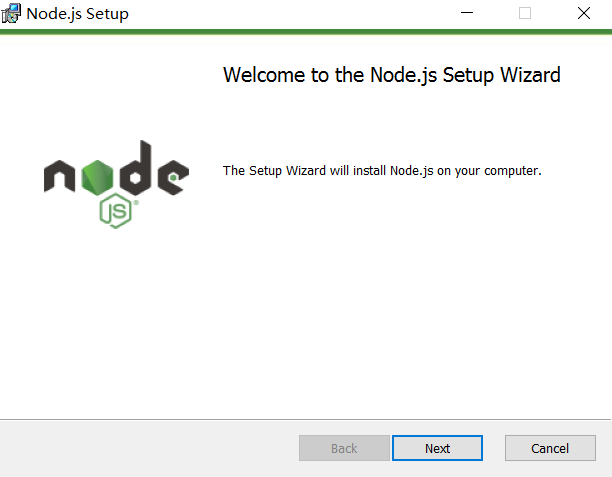
勾选复选框，点击【Next】按钮
点击【Next】按钮

安装完后点击【Finish】按钮完成安装
至此Node.js已经安装完成，可以先进行下简单的测试安装是否成功了， 在键盘按下【win+R】键，输入cmd，然后回车，打开cmd窗口。

安装完后的目录如下图所示：
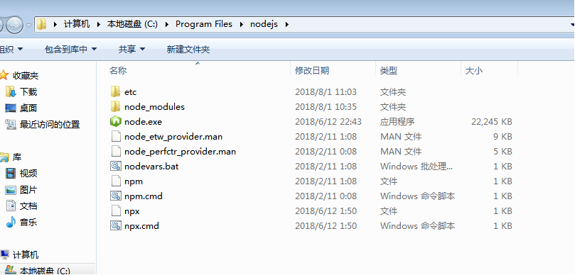
npm镜像切换工具nrm使用
npm全称Node Package Manager，是node.js的模块依赖管理工具。由于npm的源在国外，所以国内用户使用起来各种不方便。在中国访问外国的服务器非常慢~~ npm install xxx //浪费时间等等等~~，可能会成功，可能会失败（失败后再试，总之就是慢）
- 此时推荐使用 npm镜像，优先推荐 taobao
- 查看当前镜像下载路径： 命令行输入：npm config get registry
显示：https://registry.npmjs.org/ 此时所有安装工具都是在国外的npm网站下载- 以下提供两种手段：二选一即可 完成下载镜像路径的切换
- 手段A:
1.临时使用 npm install xxxxxxx --registry https://registry.npm.taobao.org
2.持久使用 npm config set registry https://registry.npm.taobao.org
3.检验设置是否成功：npm config get registry 成功显示：https://registry.npm.taobao.org/- 手段B：
打开cmd命令行输入 npm install nrm -g //一分钟时间，安装完成
查看有什么镜像可用，cmd命令行输入 nrm ls 结果如下
nrm test //测试速度 功能鸡肋可以略过
nrm use taobao //使用淘宝镜像 回车
再次输入 nrm ls //此时已经显示
检验设置是否成功：
npm config get registry 成功显示：https://registry.npm.taobao.org/- 最终温馨提示
- 切换镜像之前，在国外npm网站下载，命令行输入 ：npm install xxxxxxxxx
- A B手段二选一，设置好后，在国内taobao下载，命令行输入 ：npm install xxxxxxxxx

vue-cli（vue脚手架）教程
1,安装vue-cli
使用npm（需要安装node环境）全局安装webpack，打开命令行工具输入：npm install webpack -g或者（npm install -g webpack），安装完成之后输入 webpack -v，如下图，如果出现相应的版本号，则说明安装成功。
注意：webpack 4.X 开始，需要安装 webpack-cli 依赖 ,所以使用这条命令 npm install webpack webpack-cli -g
全局安装vue-cli，在cmd中输入命令:
npm install --global vue-cli
安装成功：
安装完成之后输入 vue -V（注意这里是大写的“V”），如下图，如果出现相应的版本号，则说明安装成功。
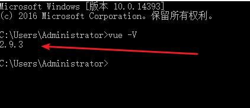
2,用vue-cli来构建项目
- 我首先在D盘新建一个文件夹（vue_test）作为项目存放地，然后使用命令行cd进入到项目目录输入：
vue init webpack vue_test - vue_test是自定义的项目名称，命令执行之后，会在当前目录生成一个以该名称命名的项目文件夹。
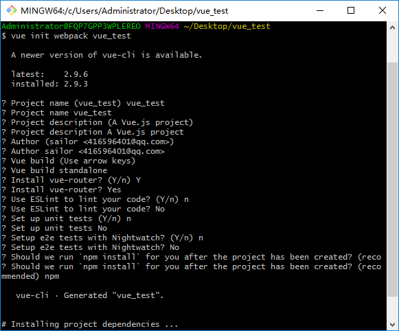输入命令后，会跳出几个选项让你回答：
- Project name (baoge)： -----项目名称，直接回车，按照括号中默认名字（注意这里的名字不能有大写字母，如果有会报错Sorry, name can no longer contain capital letters），阮一峰老师博客为什么文件名要小写 ，可以参考一下。
- Project description (A Vue.js project)： ----项目描述，也可直接点击回车，使用默认名字
- Author ()： ----作者，输入你的大名
- Runtime + Compiler: recommended for most users 运行加编译，既然已经说了推荐，就选它了
- Install vue-router? (Y/n) 是否安装vue-router，这是官方的路由，大多数情况下都使用，这里就输入“y”后回车即可。
- Use ESLint to lint your code? (Y/n) 是否使用ESLint管理代码，ESLint是个代码风格管理工具，是用来统一代码风格的，一般项目中都会使用。
- Setup unit tests with Karma + Mocha? (Y/n) 是否安装单元测试，我选择不安装n回车
- Setup e2e tests with Nightwatch(Y/n)? 是否安装e2e测试 ，我选择不安装n回车
回答完毕后上图就开始构建项目了。
配置完成后，可以看到目录下多出了一个项目文件夹baoge，然后cd进入这个文件夹：
- 安装依赖：
npm install( 如果安装速度太慢。可以安装淘宝镜像，打开命令行工具，输入：npm install -g cnpm --registry=https://registry.npm.taobao.org然后使用cnpm来安装 或者使用nrm工具切换npm镜像)
- npm install ：安装所有的模块，如果是安装具体的哪个个模块，在install 后面输入模块的名字即可。而只输入install就会按照项目的根目录下的package.json文件中依赖的模块安装（这个文件里面是不允许有任何注释的），每个使用npm管理的项目都有这个文件，是npm操作的入口文件。因为是初始项目，还没有任何模块，所以我用npm install 安装所有的模块。安装完成后，目录中会多出来一个node_modules文件夹，这里放的就是所有依赖的模块。
- 安装依赖：
然后现在，baoge文件夹里的目录是这样的：

- 解释下每个文件夹代表的意思(仔细看一下这张图）：

- 我首先在D盘新建一个文件夹（vue_test）作为项目存放地，然后使用命令行cd进入到项目目录输入：
- 3,用vue-cli来构建项目
npm run dev之后出现
I Your application is running here: http://localhost:8080则表示编译成功
浏览器打开http://localhost:8080即可

4,打包上线
注意，自己的项目文件都需要放到 src 文件夹下。在项目开发完成之后，可以输入 npm run build 来进行打包工作。
npm run build1.npm 开启了npm run dev以后怎么退出或关闭？ ctrl+c 2.--save-dev 自动把模块和版本号添加到模块配置文件package.json中的依赖里devdependencies部分 3. --save-dev 与 --save 的区别 --save 安装包信息将加入到dependencies（生产阶段的依赖） --save-dev 安装包信息将加入到devDependencies（开发阶段的依赖），所以开发阶段一般使用它打包完成后，会生成 dist 文件夹，如果已经修改了文件路径，可以直接打开本地文件查看。项目上线时，只需要将 dist 文件夹放到服务器就行了。
VueJS前端教程
vueJS快速入门
Vue.js是当下很火的一个JavaScript MVVM库，它是以数据驱动和组件化的思想构建的。相比于Angular.js，Vue.js提供了更加简洁、更易于理解的API，使得我们能够快速地上手并使用Vue.js。
- MVVM模式
下图不仅概括了MVVM模式（Model-View-ViewModel），还描述了在Vue.js中ViewModel是如何和View以及Model进行交互的。
ViewModel是Vue.js的核心，它是一个Vue实例。Vue实例是作用于某一个HTML元素上的，这个元素可以是HTML的body元素，也可以是指定了id的某个元素。
当创建了ViewModel后，双向绑定是如何达成的呢？
首先，我们将上图中的DOM Listeners和Data Bindings看作两个工具，它们是实现双向绑定的关键。
从View侧看，ViewModel中的DOM Listeners工具会帮我们监测页面上DOM元素的变化，如果有变化，则更改Model中的数据；
从Model侧看，当我们更新Model中的数据时，Data Bindings工具会帮我们更新页面中的DOM元素。
Hello World示例
了解一门语言，或者学习一门新技术，编写Hello World示例是我们的必经之路。这段代码在画面上输出"Hello World!"。
<!DOCTYPE html> <html> <head> <meta charset="UTF-8"> <title></title> </head> <body> <!--这是我们的View--> <div id="app"> {{ message }} </div> </body> <script src="js/vue.js"></script> <script> // 这是我们的Model var exampleData = { message: 'Hello World!' } // 创建一个 Vue 实例或 "ViewModel" // 它连接 View 与 Model new Vue({ el: '#app', data: exampleData }) </script> </html>使用Vue的过程就是定义MVVM各个组成部分的过程的过程。
- 定义View(html代码)
- 定义Model(页面数据部分)
- 创建一个Vue实例或"ViewModel",它用于连接View和Model
在创建Vue实例时，需要传入一个选项对象，选项对象可以包含数据(data)、挂载元素(el)、方法(methods)、生命周期钩子等等。
在这个示例中，选项对象的el属性指向View，el: '#app'表示该Vue实例将挂载到
<div id="app">...</div>这个元素；data属性指向Model，data: exampleData表示我们的Model是exampleData对象。
Vue.js有多种数据绑定的语法，最基础的形式是文本插值，使用一对大括号语法，在运行时{{ message }}会被数据对象的message属性替换，所以页面上会输出"Hello World!"。
双向绑定示例
- MVVM模式本身是实现了双向绑定的，在Vue.js中可以使用v-model指令在表单元素上创建双向数据绑定。
<!--这是我们的View--> <div id="app"> <p>{{ message }}</p> <input type="text" v-model="message"/> </div> 将message绑定到文本框，当更改文本框的值时，
<p>{{ message }}</p>中的内容也会被更新。
反过来，如果改变message的值，文本框的值也会被更新，我们可以在Chrome控制台进行尝试。
Vue实例的data属性指向exampleData，它是一个引用类型，改变了exampleData对象的属性，同时也会影响Vue实例的data属性。
- MVVM模式本身是实现了双向绑定的，在Vue.js中可以使用v-model指令在表单元素上创建双向数据绑定。
Vue.js的常用指令
上面用到的v-model是Vue.js常用的一个指令，那么指令是什么呢？
Vue.js的指令是以v-开头的，它们作用于HTML元素，指令提供了一些特殊的特性，将指令绑定在元素上时，指令会为绑定的目标元素添加一些特殊的行为，我们可以将指令看作特殊的HTML特性（attribute）。
Vue.js提供了一些常用的内置指令，接下来我们将介绍以下几个内置指令：
v-if指令 v-show指令 v-else指令 v-for指令 v-bind指令 v-on指令Vue.js具有良好的扩展性，我们也可以开发一些自定义的指令，后面的文章会介绍自定义指令。
v-if指令
v-if是条件渲染指令，它根据表达式的真假来删除和插入元素，它的基本语法如下： v-if="expression"
expression是一个返回bool值的表达式，表达式可以是一个bool属性，也可以是一个返回bool的运算式。例如：
<!DOCTYPE html> <html> <head> <meta charset="UTF-8"> <title></title> </head> <body> <div id="app"> <h1>Hello, Vue.js!</h1> <h1 v-if="yes">Yes!</h1> <h1 v-if="no">No!</h1> <h1 v-if="age >= 25">Age: {{ age }}</h1> <h1 v-if="name.indexOf('jack') >= 0">Name: {{ name }}</h1> </div> </body> <script src="js/vue.js"></script> <script> var vm = new Vue({ el: '#app', data: { yes: true, no: false, age: 28, name: 'keepfool' } }) </script> </html>注意：yes, no, age, name这4个变量都来源于Vue实例选项对象的data属性。

这段代码使用了4个表达式：
- 数据的yes属性为true，所以"Yes!"会被输出；
- 数据的no属性为false，所以"No!"不会被输出；
- 运算式age >= 25返回true，所以"Age: 28"会被输出；
- 运算式name.indexOf('jack') >= 0返回false，所以"Name: keepfool"不会被输出。
注意：v-if指令是根据条件表达式的值来执行元素的插入或者删除行为。
- 这一点可以从渲染的HTML源代码看出来，上面只渲染了3个
<h1>元素，v-if值为false的<h1>元素没有渲染到HTML。

为了再次验证这一点，可以在Chrome控制台更改age属性，使得表达式age >= 25的值为false，可以看到
<h1>Age: 28</h1>元素被删除了
age是定义在选项对象的data属性中的，为什么Vue实例可以直接访问它呢？这是因为每个Vue实例都会代理其选项对象里的data属性。
v-show指令
v-show也是条件渲染指令，和v-if指令不同的是，使用v-show指令的元素始终会被渲染到HTML，它只是简单地为元素设置CSS的style属性。
<!DOCTYPE html> <html> <head> <meta charset="UTF-8"> <title></title> </head> <body> <div id="app"> <h1>Hello, Vue.js!</h1> <h1 v-show="yes">Yes!</h1> <h1 v-show="no">No!</h1> <h1 v-show="age >= 25">Age: {{ age }}</h1> <h1 v-show="name.indexOf('jack') >= 0">Name: {{ name }}</h1> </div> </body> <script src="js/vue.js"></script> <script> var vm = new Vue({ el: '#app', data: { yes: true, no: false, age: 28, name: 'keepfool' } }) </script> </html>
在Chrome控制台更改age属性，使得表达式age >= 25的值为false，可以看到
<h1>Age: 24</h1>元素被设置了style="display:none"样式。
v-else指令
可以用v-else指令为v-if或v-show添加一个“else块”。v-else元素必须立即跟在v-if或v-show元素的后面——否则它不能被识别。
<!DOCTYPE html> <html> <head> <meta charset="UTF-8"> <title></title> </head> <body> <div id="app"> <h1 v-if="age >= 25">Age: {{ age }}</h1> <h1 v-else>Name: {{ name }}</h1> <h1>---------------------分割线---------------------</h1> <h1 v-show="name.indexOf('keep') >= 0">Name: {{ name }}</h1> <h1 v-else>Sex: {{ sex }}</h1> </div> </body> <script src="js/vue.js"></script> <script> var vm = new Vue({ el: '#app', data: { age: 28, name: 'keepfool', sex: 'Male' } }) </script> </html>v-else元素是否渲染在HTML中，取决于前面使用的是v-if还是v-show指令。
这段代码中v-if为true，后面的v-else不会渲染到HTML；v-show为tue，但是后面的v-else仍然渲染到HTML了。
v-for指令
v-for指令基于一个数组渲染一个列表，它和JavaScript的遍历语法相似：
v-for="item in items"items是一个数组，item是当前被遍历的数组元素。
`<!DOCTYPE html><div id="app"> <table> <thead> <tr> <th>Name</th> <th>Age</th> <th>Sex</th> </tr> </thead> <tbody> <tr v-for="person in people"> <td>{{ person.name }}</td> <td>{{ person.age }}</td> <td>{{ person.sex }}</td> </tr> </tbody> </table> </div>`我们在选项对象的data属性中定义了一个people数组，然后在#app元素内使用v-for遍历people数组，输出每个person对象的姓名、年龄和性别。

v-bind指令
v-bind指令可以在其名称后面带一个参数，中间放一个冒号隔开，这个参数通常是HTML元素的特性（attribute），例如：
v-bind:argument="expression"下面这段代码构建了一个简单的分页条，v-bind指令作用于元素的class特性上。这个指令包含一个表达式，表达式的含义是：高亮当前页。
<!DOCTYPE html> <html> <head> <meta charset="UTF-8"> <title></title> <link rel="stylesheet" href="styles/demo.css" /> </head> <body> <div id="app"> <ul class="pagination"> <li v-for="n in pageCount"> <a href="javascripit:void(0)" v-bind:class="activeNumber === n + 1 ? 'active' : ''">{{ n + 1 }}</a> </li> </ul> </div> </body> <script src="js/vue.js"></script> <script> var vm = new Vue({ el: '#app', data: { activeNumber: 1, pageCount: 10 } }) </script> </html>注意v-for="n in pageCount"这行代码，pageCount是一个整数，遍历时n从0开始，然后遍历到pageCount –1结束。
v-on指令
- v-on指令用于给监听DOM事件，它的用语法和v-bind是类似的，例如监听
<a>元素的点击事件：<a v-on:click="doSomething"> 有两种形式调用方法：绑定一个方法（让事件指向方法的引用），或者使用内联语句。Greet按钮将它的单击事件直接绑定到greet()方法，而Hi按钮则是调用say()方法。
<!DOCTYPE html> <html> <head> <meta charset="UTF-8"> <title></title> </head> <body> <div id="app"> <p><input type="text" v-model="message"></p> <p> <!--click事件直接绑定一个方法--> <button v-on:click="greet">Greet</button> </p> <p> <!--click事件使用内联语句--> <button v-on:click="say('Hi')">Hi</button> </p> </div> </body> <script src="js/vue.js"></script> <script> var vm = new Vue({ el: '#app', data: { message: 'Hello, Vue.js!' }, // 在 `methods` 对象中定义方法 methods: { greet: function() { // // 方法内 `this` 指向 vm alert(this.message) }, say: function(msg) { alert(msg) } } }) </script> </html>
- v-on指令用于给监听DOM事件，它的用语法和v-bind是类似的，例如监听
v-bind和v-on的缩写
Vue.js为最常用的两个指令v-bind和v-on提供了缩写方式。v-bind指令可以缩写为一个冒号，v-on指令可以缩写为@符号。
``综合示例
现在我们已经介绍了一些Vue.js的基础知识了，结合以上知识我们可以来做个小Demo。
`<!DOCTYPE html><head> <meta charset="UTF-8"> <title></title> <link rel="stylesheet" href="styles/demo.css" /> </head> <body> <div id="app"> <fieldset> <legend> Create New Person </legend> <div class="form-group"> <label>Name:</label> <input type="text" v-model="newPerson.name"/> </div> <div class="form-group"> <label>Age:</label> <input type="text" v-model="newPerson.age"/> </div> <div class="form-group"> <label>Sex:</label> <select v-model="newPerson.sex"> <option value="Male">Male</option> <option value="Female">Female</option> </select> </div> <div class="form-group"> <label></label> <button @click="createPerson">Create</button> </div> </fieldset> <table> <thead> <tr> <th>Name</th> <th>Age</th> <th>Sex</th> <th>Delete</th> </tr> </thead> <tbody> <tr v-for="person in people"> <td>{{ person.name }}</td> <td>{{ person.age }}</td> <td>{{ person.sex }}</td> <td :class="'text-center'"><button @click="deletePerson($index)">Delete</button></td> </tr> </tbody> </table> </div> </body> <script src="js/vue.js"></script> <script> var vm = new Vue({ el: '#app', data: { newPerson: { name: '', age: 0, sex: 'Male' }, people: [{ name: 'Jack', age: 30, sex: 'Male' }, { name: 'Bill', age: 26, sex: 'Male' }, { name: 'Tracy', age: 22, sex: 'Female' }, { name: 'Chris', age: 36, sex: 'Male' }] }, methods:{ createPerson: function(){ this.people.push(this.newPerson); // 添加完newPerson对象后，重置newPerson对象 this.newPerson = {name: '', age: 0, sex: 'Male'} }, deletePerson: function(index){ // 删一个数组元素 this.people.splice(index,1); } } }) </script>`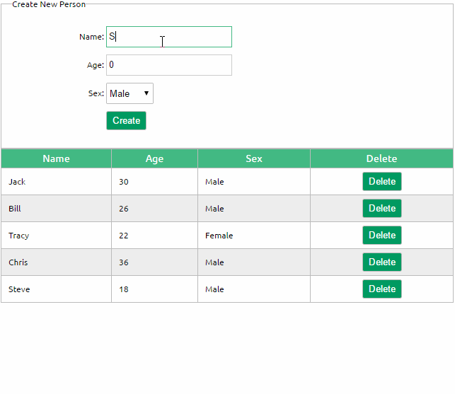
Vue组件通信
组件 (Component) 是 Vue.js 最强大的功能之一。我的理解组件就是封装起来可以重复使用的html代码，传动的多页面应用页面之间的数据传递主要是依赖URL传递，或者cookie、localStorage等方式，vue单页面应用是组件化开发，没有页面之间的数据传递，但是存在各个组件之间的数据传递。
- 组件通讯包括：父子组件之间的通信和兄弟组件之间的通信。
- 父组件 --> 子组件
- 属性传递
发送：父组件通过对子组件绑定一个属性，这个属性的值将会传递给子组件。
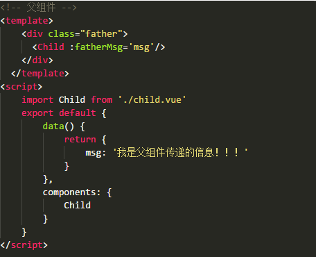
接收：子转件通过vue实例化属性props接收父组件传递过来的数据，有两种接收的方式：
- 组件直接调用父组件，有两种调用，一是调用父组件$parent 二是调用根组件$root:
父组件信息：
在main.js里面定义的根组件：
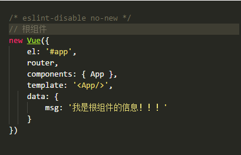
子组件获取信息：
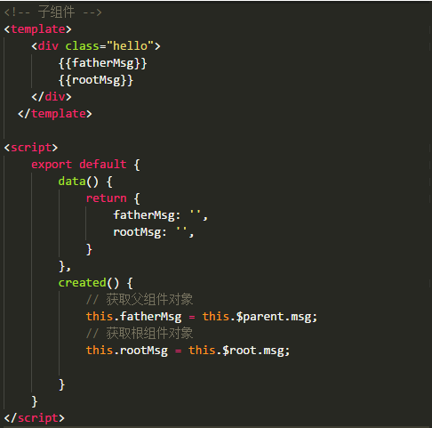
- 子组件 --> 父组件
- 通过发送事件和监听事件实现 发送事件（触发事件）：this.$emit(事件名，参数)；
监听事件（事件响应）：
- 父组件直接获取子组件属性和方法
我们可以给子组件起个名字。将名字设置为子组件ref属性的值；


> 以上都是直接父子组件的传递数据的方法；
- 全局事件总线，用来处理兄弟，祖父祖孙组件之间的通信。
方法就是使用一个空的vue实例（Bus）作为全局事件总线； 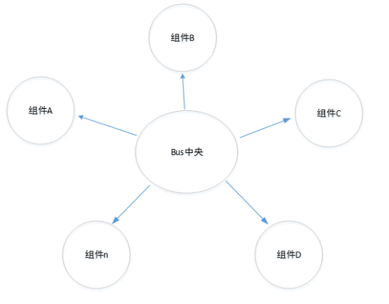
各组件可自己定义好组件内接收外部组件的消息事件即可，不用理会是哪个组件发过来；而对于发送事件的组件，亦不用理会这个事件到底怎么发送给我需要发送的组件。- 定义一个空的vue实例；

- 在需要用到的地方引入Bus.js；
监听自定义事件

- 触发自定义事件

- 定义一个空的vue实例；
Vuex的使用
假设已经用vue脚手架工具构建好了项目；那么可以开始使用去引入vuex并使用它；
- 利用包管理器npm安装vuex
- 新建一个store.js，这个文件里面将用来存储各个组件传递的数据还有操作数据的方法；
- 在store.js中输出vuex.Store对象的实例化；
- 之后我们在main.js中引入并且配置好我们要使用的vuex；
- 接下来就可以开始使用vuex了，vuex有5个核心概念分别是State，Getter，Mutation，Action，Module；
- A.State：
Vuex这个属性将会存储着各个组件可能都会用到的数据；就好像localStorage，存储的是各个页面的共享数据；
在组件中我们可以通过this.$store.state.[数据名称]来显示这里面的数据，也可以写到computed计算属性里面：
还可以通过mapState的使用更加简单来取到state里面的数据：- 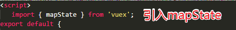
然后只需要在计算属性里面加入：- Mutations：
Mutations意思是改变的意思，我们在操作state里面的数据的时候可以简单的使用$store.state =另外的数据；这种方法也可以达到更新页面的效果，但是vuex为我们提供更规范的写法来操作state
之后我们是在组件上通过this.$store.commit(‘mutations里面的方法名称’)来触发相应的函数来达到更新state的目的；
因为每次写this.$store.commit很浪费时间，所以vuex也提供对应的方法：mapMutations;- Getters:
Getters意思是获取的意思，在vuex中的作用是在获取数据之前对数据进行加工处理后输出。
基本用法：
- 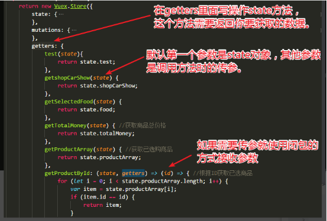
- 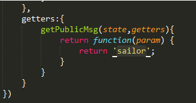
之后可以在页面上通过this.$store.getters.方法名；如果需要传参就需要this.$store.getters.方法名(参数)；
Getters也是有对应的mapGetters方法来简化代码：- Actions:
Actions和Mutations功能基本是一样的，但是actions是异步的改变state状态，而mutations是同步的改变状态。就是说当mutations里面的方法很复杂，执行时间久的话是会阻塞程序的运行，而actions是异步的所以就不会；
Actions操作的是mutation，而出发action则通过this.$store.dispatch(‘方法名’)来调用；
通过mapActions来简化代码：- Module:
Module是模块的意思，当我们的项目很大很复杂的时候，state中存储的状态也会变得非常多；
使用方法：
- 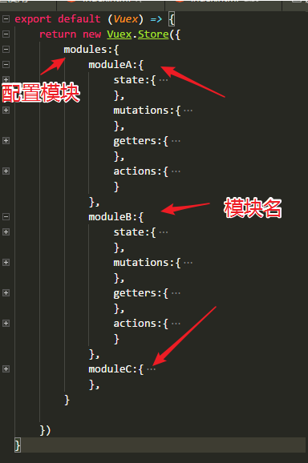
配置完后，其他所说的操作数据的方法都要加上模块名称：- 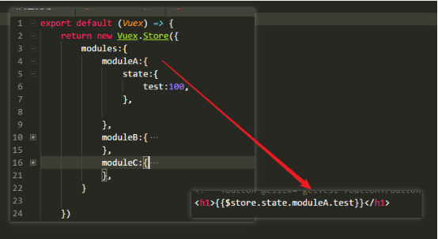
以上就是vuex的内容！！